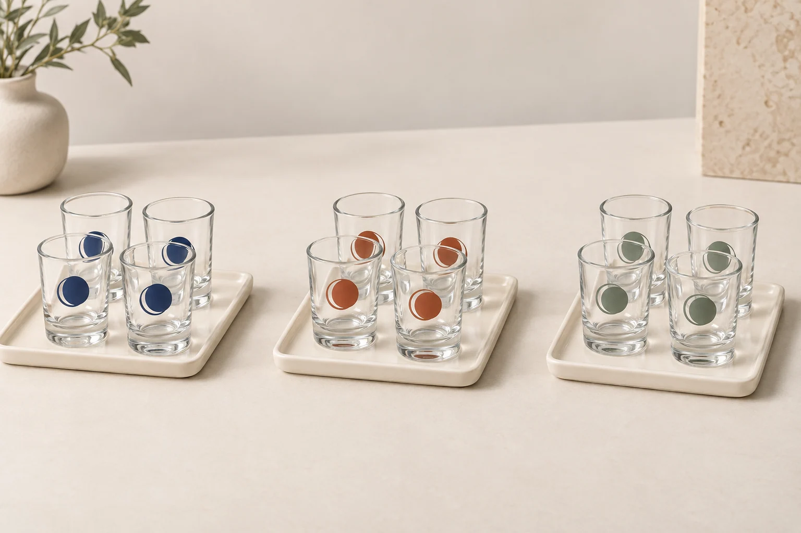

A quotation for 3,000 shot glasses can mean one model with one design, three models sharing a carton, or six separately decorated batches. Those are different orders. Before comparing a price, establish what the supplier's minimum order quantity applies to and what the quoted unit actually includes.
Quick answer: request the minimum quantity for the glass model, each decoration or color, and each packaging version separately. Then compare offers using the same allocation of pieces, finished specification, packing, delivery scope and approval milestones. There is no single MOQ assumed for the Glarivo shot glass collection; confirm the terms for your selected configuration.
This guide helps bar buyers, souvenir retailers and promotional distributors turn a shortlist into a comparable quotation. For help selecting the glass itself, start with the Shot Glass Buying Guide for Wholesale Buyers.
1. Ask what the minimum quantity applies to
“MOQ: 3,000 pieces” is incomplete unless the offer identifies the scope. Ask the supplier to separate the following questions, even if several answers ultimately use the same quantity.
- Glass model: is the minimum for one existing glass reference, or can several references share an order?
- Glass color or finish: does a colored body, coating or other finish require a separate batch?
- Decoration: does each artwork, print color combination or decoration process have its own minimum?
- Packaging: is the minimum for plain bulk packing different from that for a printed retail box or gift set?
- Order and shipment: is there also a minimum total order value, carton multiple or shipment quantity?
Ask for written answers beside each quotation line. A minimum order quantity and an ordering multiple are different fields: one establishes the lowest acceptable quantity, while the other can determine which quantities can actually be supplied. Confirm both before rounding an order.
Existing glass, decorated glass or a new shape?
An existing undecorated model provides a useful starting specification. Applying artwork to that model adds a decoration scope. Developing a new shape adds a separate development scope. Request a separate offer for each option you are considering; do not carry the commercial terms from one into another.
If a new shape is involved, ask whether tooling is required, how development samples will be approved and which charges are recurring. Availability, ownership and later access to any tooling should be stated in the supplier's offer. Do not infer them from payment of a sample fee.
2. Allocate the quantity before requesting a price
Write the order as individual lines: glass reference, finish, artwork revision, packaging version and pieces required. This makes an assortment visible to the supplier before either party discusses a combined minimum.
Illustrative quantity example only: a buyer wants 3,600 glasses divided evenly across three designs. That is 1,200 pieces per design. If a hypothetical offer requires 1,500 pieces per design, the order does not qualify merely because its total exceeds 1,500. Keeping all three designs at that minimum would mean 4,500 pieces, or 900 more than originally planned. These numbers explain the allocation; they are not Glarivo order terms.

Ask whether designs can share a production batch and which elements must remain identical. A shared glass body does not by itself confirm a shared decoration or printed-box minimum. Record any permitted combination in the revised offer.
For mixed cartons, specify the piece count of each design inside each carton. Also confirm whether replacement orders can contain a single design. An attractive launch assortment can become difficult to replenish if its ordering rules are unclear.
3. Compare the same finished specification
Give each supplier the same request, with a revision date. If a supplier proposes an alternative, keep it on a separate line and list the differences instead of treating it as an equivalent offer.
Use these fields as the columns of your comparison sheet:
- Glass: reference, capacity convention, outside dimensions with units, finish and agreed specification revision.
- Decoration: process, artwork reference, size, placement and color references.
- Quantity: pieces per configuration, total pieces, minimum quantity and ordering multiple.
- Packing: pieces per sellable unit, units per carton, protection and any printed packaging.
- Price basis: currency, price per piece or set, included operations and separately charged items.
- Delivery scope: the stated delivery basis and location, freight inclusions and exclusions.
- Approval and timing: sample scope, production start conditions, goods-ready milestone and quotation expiry.
Resolve the volume definition with the shot glass capacity-check guide. Resolve decoration details with the custom logo artwork and sample checklist. Neither a nominal capacity nor an attractive product image fixes the complete specification for a quotation.
Record unknowns as “not confirmed.” A blank field should not silently become zero cost, included freight or an approved substitution.
4. Separate unit prices from one-time charges
Ask whether the unit price includes the undecorated glass, decoration, protective packing and retail packaging. Then request separate lines for any artwork preparation, setup, tooling, physical samples, sample delivery, inspection or other agreed services.
Use a defined comparison subtotal for the scope you are reviewing: the sum of each configuration's piece quantity multiplied by its quoted price per piece, plus separately quoted charges for that same scope. Add a charge only once. Keep excluded or unconfirmed items visible alongside the subtotal.
If comparing that subtotal on a per-piece basis, divide it by the total number of individual glasses covered. If an offer is priced per set, first record the glasses per set and what else the set contains. A six-glass gift set and a single glass cannot be compared by their displayed unit prices alone.
This is a quotation comparison, not a complete delivered-cost calculation. Keep freight, destination charges and any applicable taxes or duties outside the subtotal unless their scope and amounts have been confirmed for both offers. Offers with different delivery scopes remain incomplete comparisons.
Clarify sample credits and repeat-order charges
If a supplier offers to credit a sample or setup charge against an order, request the conditions in writing: eligible model and design, order quantity, deadline and where the credit will appear. Keep the original charge and proposed credit separate until confirmed.
For a repeat order, ask which setup charges apply again and whether stored artwork or tooling remains usable. Reordering the same title or product number does not guarantee that every production detail and charge remains unchanged.
5. Keep packaging and quantity arithmetic aligned
A change from bulk packing to individual retail boxes can change the quoted scope, carton count and freight information. Ask for updated external carton dimensions and gross weight for the actual packing option being priced.
Use the shot glass packaging guide to define the packing layers and sample checks before requesting that revised offer.
Use a second check for set orders. For illustration only, 1,200 glasses packed as six-glass sets make 200 sets. If the agreed master carton contains ten of those sets, the order requires 20 master cartons, with 60 glasses in each. This example is arithmetic, not a packing specification for any catalog item.
Confirm whether the ordering multiple refers to individual glasses, sets, inner boxes or master cartons. Specify the allowed assortment inside each layer. If the quantities do not divide evenly, ask the supplier to explain how the final carton or revised order quantity will be handled.
Where a printed box has a different minimum from the glasses, request an explicit plan. The supplier might propose a different packaging option or separately quote surplus boxes, but neither arrangement should be assumed. Identify who holds any surplus packaging and what happens when artwork changes.
6. Compare lead times by their start and finish points
“Production takes four weeks” is not enough to plan an event or shelf launch. Ask what starts the clock, what stops it and which steps happen beforehand. Treat every duration as supplier-specific information to confirm, rather than a promise attached to a product category.
Build the schedule around these milestones:
- The glass, artwork, quantities and packing specification are confirmed.
- Any required proof, decorated sample and packed sample are reviewed.
- Approval and payment conditions for starting production are satisfied.
- Production goods are ready for the agreed checks and dispatch preparation.
- The shipment is handed over for the specified transport scope.
- The planned arrival and receiving window is reviewed with the logistics provider.
Record sample revisions as additional work with their own timing. A sample courier estimate is not the production lead time, and a goods-ready date is not an arrival date. Give the supplier the milestone that matters to your purchase and ask them to identify unresolved dependencies.
7. Reduce complexity before increasing quantity
If an initial offer does not fit your intended quantity, ask the supplier to price specific alternatives. Possible requests include an existing glass reference, fewer artwork versions, a simpler decoration scope or an unprinted packaging option. These are questions to explore, not promises that a lower minimum is available.
Ask for the quantity, specification, price and timing changes together. A lower unit price at a larger quantity creates a different total order and inventory commitment. Compare it with the number of pieces you actually intend to buy and sell, and keep surplus designs or packaging visible in the decision.
For a repeat order, send the previous reference and approval revision, then reconfirm the current glass, decoration, packing, quantity rules, charges and schedule. Ask the supplier to identify any proposed changes before accepting the new offer.
Copy this shot glass quotation request
Shortlist models from the Shot Glass collection, then use the inquiry option on the relevant product page. Include the following brief with your request:
- Project and destination: [sales channel], [destination country and delivery location], [required delivery milestone].
- Glass reference: [product link or reference], [capacity requirement and convention], [finish].
- Order allocation: [pieces for each model, artwork and color], [total individual glasses].
- Decoration: [artwork revision], [process if specified], [size, position and colors].
- Packaging: [bulk or retail format], [glasses per set if applicable], [assortment and carton requirements].
- Quantity rules requested: MOQ per glass model, decoration and packaging version; ordering multiples; whether designs may be combined.
- Price breakdown requested: currency, quoted unit, included glass/decoration/packing, one-time charges, sample costs and any credit conditions.
- Delivery and timing requested: delivery scope and location, exclusions, quote validity, sample stages and production start conditions.
- Approval requested: representative sample scope, specification revision and written confirmation of alternatives or changes.
Ask the supplier to return the same allocation with its offer and clearly mark unresolved fields. A useful quotation tells you what you can order, what you will receive and which conditions must be met before production begins. Return to Shot Glass Sourcing for the wider purchasing topic.
Frequently asked questions
What is the minimum order for wholesale shot glasses?
Confirm it for the exact glass, finish, decoration and packaging. An overall order minimum may coexist with minimums for individual configurations. This article does not set a catalog-wide Glarivo MOQ.
Can different logos count toward one MOQ?
Ask the supplier to confirm the permitted combination and any separate setup charges. Sharing a glass model does not automatically allow different artwork versions to share a minimum.
Does a lower price per glass mean a cheaper order?
Only a comparison with matching quantities and scope can answer that question. Account for separately charged items, the packaging configuration and the total number of pieces required. Keep unknown and excluded charges visible.
Is the minimum for a sample the same as the production MOQ?
Treat sample supply and production as separate requests. Confirm sample availability, charges, decoration scope and shipping, then obtain the production terms for the proposed order.
Can I reuse the first quotation for a reorder?
Use it as a reference, then request current confirmation. Identify the approved specification and ask about changes to the glass, artwork, packing, quantity requirements, charges and timing.